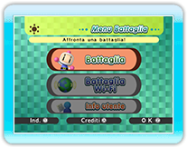

7 |
Operazioni preliminari |
 |
|
Tieni il telecomando Wii di lato, come indicato sullo schermo, e premi
 per visualizzare la schermata iniziale. Premi nuovamente per visualizzare il menu Battaglia. per visualizzare la schermata iniziale. Premi nuovamente per visualizzare il menu Battaglia.
Seleziona uno dei tre menu per scegliere una partita.
|
|||||||||||||||||||||||||||||||||
 |
 |
 |